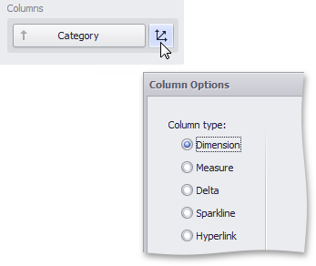

Column Type Overview
The Grid dashboard item supports four types of columns.
-
Displays values in the bound data item "as is".
-
Allows you to display hyperlinks in the Grid dashboard item.
-
Displays summaries calculated against data in the bound data item.
-
Bound to two measures, it calculates summaries for both measures, and displays the difference between these summaries.
-
Displays values in the bound data item using sparklines.

When you drop a data item into the Columns section, the type for the new column is determined automatically, based on the data type.
Column Type Indication
The type of the column is indicated within the corresponding data item container in the DATA ITEMS area.

Column type indicators are defined as follows:
| Icon | Column Type |
|---|---|
 |
Dimension Column |
| Hyperlink Column | |
 |
Measure Column |
 |
Delta Column |
 |
Sparkline Column |
Changing Column Type
To change the column type, click the column type indicator. In the invoked Column Options window, select the required column type in the Column type section.
